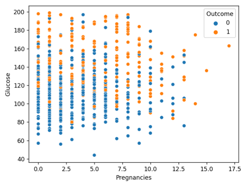
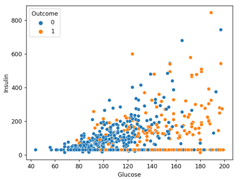
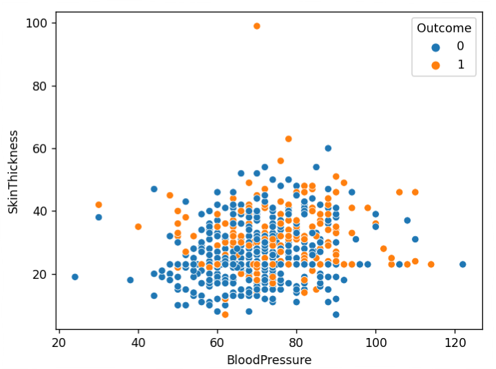

kNN algoritması, çoğunluk sınıf etiketinin, özellik uzayındaki en yakın 'k' komşuları arasında yeni bir veri noktasının sınıf etiketini belirlediği bir oylama sistemi olarak düşünülebilir. Daha iyi anlayabilmek için bir örnek vermek gerekirse, mesela birkaç yüz kişinin yaşadığı küçük bir köy düşünün ve hangi siyasi partiye oy vereceğinize karar vermelisiniz. Bunun için en yakın komşunuza gidip hangi siyasi partiyi desteklediğini sorabilirsiniz. En yakın 'k' komşularınızın çoğunluğu A tarafını destekliyorsa, o zaman büyük olasılıkla A partisine de oy verirsiniz. Bu, kNN algoritmasının çalışma şekline benzer; k en yakın komşusu.
-> Daha önce normalleştirerek böldüğümüz veri setini K Nearest Neighbours(KNN-K En Yakın Komşu) algoritmasını kullanmak üzere bir model eğitebiliriz. Böylece veri kümesi üzerinde tahminler yapabiliriz.
-> Model eğitildikten sonra elimizde bulunan k'nin 1 olduğu bir knn modeli ile aşağıdaki eğitim ve test doğruluk sonuçları elde edilmiştir.
-> k'nin 24 olduğu bir knn modeli ile aşağıdaki eğitim ve test doğruluk sonuçları elde edilmiştir.
-> Daha sonra bu modeli puanlayabilmek için test veri kümesi üzerinden tahmmin oluşturuldu ve aşağıdaki doğruluk skoru elde edildi.
-> KNN sınıflandırıcı algoritmasında k'nin 1 olduğu ve hakkında aşağıda doğruluk, kesinlik, skor vs bildiren bir rapor elde edilmiştir.
| precision | recall | f1-score | support | |
|---|---|---|---|---|
| 0 | 0.81 | 0.79 | 0.80 | 107 |
| 1 | 0.54 | 0.57 | 0.56 | 47 |
| accuracy | 0.72 | 154 | ||
| macro avg | 0.67 | 0.68 | 0.68 | 154 |
| weighted avg | 0.73 | 0.72 | 0.72 | 154 |
-> KNN sınıflandırıcı algoritmasında k'nin 24 olduğu ve hakkında aşağıda doğruluk, kesinlik, skor vs bildiren bir rapor elde edilmiştir.
| precision | recall | f1-score | support | |
|---|---|---|---|---|
| 0 | 0.84 | 0.92 | 0.88 | 107 |
| 1 | 0.76 | 0.60 | 0.67 | 47 |
| accuracy | 0.82 | 154 | ||
| macro avg | 0.80 | 0.76 | 0.77 | 154 |
| weighted avg | 0.81 | 0.82 | 0.81 | 154 |
-> Model üzerinden makine öğrenimi alanında ve özellikle istatistiksel sınıflandırma problemlerinde, hata matrisi olarak da bilinen bir Confusion Matrix (Karışıklık Matrisi) elde edildi.
-> Başta oluşturulan modelden bağımsız olarak modelin K değerlerinin hata oranını veren yandaki grafik elde edildi.
-> Karışıklık matrisi, bir sınıflandırma modelinin gerçek performansını temsil eden parametrelerden biridir ve sistemin performansını doğru bir şekilde gözlemlemek için kullanılabilir. KNN için, modeli eğitmenin ilk adımı "K" değerini seçmektir. Yandaki grafikten K=26-27 değerleri, nispeten daha düşük bir hata oranı gösterir. Yani bu model için bunlar seçilebilir.
-> K’nin en iyi değerini almak için K’nin doğruluk skorlarının bulunduğu bir grafik elde edildi buradan doğruluk skoru en yüksek olanlardan en küçük olanın alınması tercih ediliyor. Çünkü, daha yüksek K değerleri kullanıldığında, modelin orijinalden daha uzak olan daha fazla veri noktası kullanmasına sebep oluyor.
-> Ardından en iyi K değerini bulabilmek için «Grid Search CV» kütüphanesini kullanarak bir model üzerinden en iyi ölçüm modeli, p değeri ve en iyi K değerleri elde edildi.
| En iyi metrik: | euclidean |
| En iyi p: | 1 |
| en iyi n_neighbors: | 24 |
-> K değerlerinin etkisini görmek için k=1 ve k=24 ile test setini ve tahmin edilen değerleri yandaki gibi görselleştirildi.
-> Dağılım grafikleri, değişkenler arasındaki ilişkiyi gözlemlemek için kullanılır ve aralarındaki ilişkiyi göstermek için noktalar kullanır. Matplotlib kitaplığındaki scatter() yöntemi, bir dağılım grafiği çizmek için kullanılır. Dağılım grafikleri, değişkenler arasındaki ilişkiyi ve birindeki değişikliğin diğerini nasıl etkilediğini göstermek için yaygın olarak kullanılır.
-> Aşağıda da x ve y verilerinin hue yoluyla seçilen diaybet hastalığı sonuçlarının karşılaştırılmasına yer verilmiştir. Böylece veriler arasınnda diyabet hastası olanlar için farklı etmenler var mı varsa nelerdir gibi soruların cevapları rahatlıkla alınabilir.
  